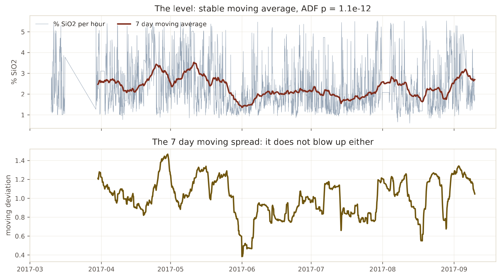
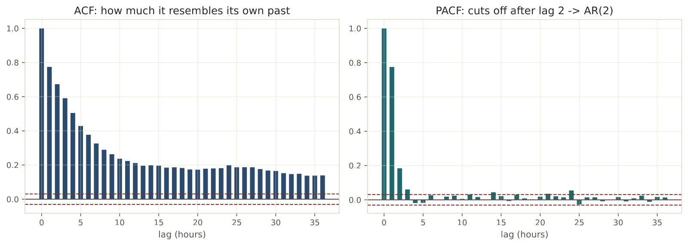
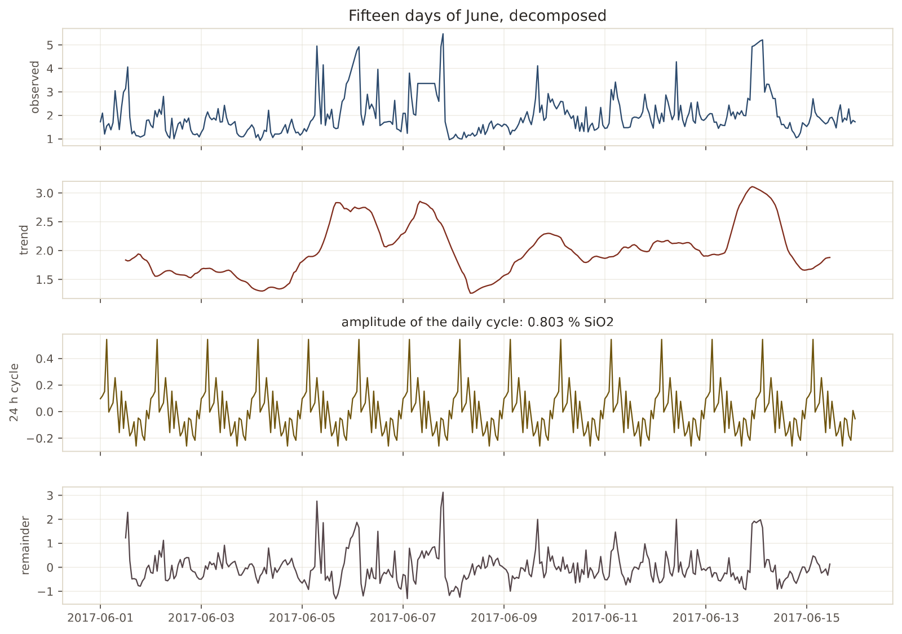
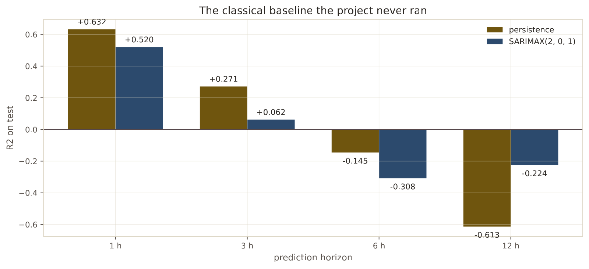

In 30 seconds
- 0.52 vs 0.63. SARIMAX against persistence at one hour. The classical baseline loses too.
- The series was already stationary. Dickey-Fuller gives a p of 1.1 times 10 to the −12, so there was no need to difference. Nobody had checked.
- The PACF cuts off at lag 2. That is where the order of the model comes from, with data and not by default.
- SARIMAX wins only at 12 hours, with −0.224 against −0.613. It wins in negative territory, which is no use.
- Recursive beats direct at a long horizon, −0.359 against −0.798. And it is counterintuitive.
What this module solves
The project applied nine modules of machine learning to a time series without ever running the checks a forecasting engineer runs first.
Nobody checked whether the series was stationary. Nobody looked at its autocorrelation. And above all, nobody put the classical baseline in the table, which is SARIMAX. Without it, the sentence "machine learning adds nothing" was comparing against one competitor fewer.
This module brings in those checks and that competitor.
Before the theory: a toy example
Two series of six hours. Both rise, but for different reasons.
| Hour | 1 | 2 | 3 | 4 | 5 | 6 |
|---|---|---|---|---|---|---|
| Series A | 2 | 4 | 2 | 4 | 2 | 4 |
| Series B | 2 | 4 | 6 | 8 | 10 | 12 |
Step 1. The mean of each half
Split them into two halves and compute the mean of each.
Series A: first half (2, 4, 2) -> 8/3 = 2.67 second (4, 2, 4) -> 10/3 = 3.33
Series B: first half (2, 4, 6) -> 12/3 = 4 second (8, 10, 12) -> 30/3 = 10In A the two means almost coincide. In B they multiply two and a half times. That is the difference between a series that returns to its place and one that wanders off.
Step 2. What being stationary means
A series is stationary when its mean and its spread do not change over time. A is: it oscillates around 3 and always returns. B is not: every hour is higher than the one before.
This is not a technicality. Almost every classical forecasting model assumes stationarity, and applying them to a series that wanders off gives meaningless results.
Step 3. Differencing, which is the cure
Differencing is keeping the change instead of the level.
Series B: 2 4 6 8 10 12
change of B: 2 2 2 2 2The change of B is constant. A series that was wandering off has become one that does not move. That is the d of ARIMA: how many times you have to difference.
Step 4. How the order is chosen
Two tools, and they are read the opposite way round from each other.
The ACF measures how much the series resembles itself shifted. The PACF does the same removing the effect of the intermediate lags.
if the PACF cuts off sharply at lag p -> there is an AR(p)
if the ACF cuts off sharply at lag q -> there is an MA(q)Step 5. What just happened
Three decisions this project had skipped: checking whether to difference, looking at the autocorrelation, and choosing the order with that information instead of by default.
And a fourth that shows up later: how to forecast several hours ahead. There are two ways and they give different results.
Glossary
12 terms, in plain words
- Stationarity. The mean and the spread of the series not changing over time.
- Augmented Dickey-Fuller. The standard stationarity test. A small p-value says the series is indeed stationary.
- Differencing. Keeping the change between consecutive values, instead of the level.
- ACF. Autocorrelation. How much the series resembles itself shifted by N hours.
- PACF. Partial autocorrelation. The same, removing the effect of the intermediate lags.
- AR(p). Autoregressive part: the value now depends on the p previous values.
- MA(q). Moving-average part: the value now depends on the q previous errors.
- ARIMA(p, d, q). The combination, with
ddifferencings. - SARIMAX. ARIMA with seasonality and with external variables. The classical baseline.
- Seasonal decomposition. Splitting the series into trend, cycle and remainder.
- Direct multi-step. Training one model per horizon, which jumps the whole distance.
- Recursive multi-step. Training a one-step model and applying it several times, feeding it its own predictions.
Step by step
Step 1. Ask whether to difference
Dickey-Fuller on the level and on the change. If the level is already stationary, differencing is unnecessary and throws information away besides.
Step 2. Look at the autocorrelation
ACF and PACF up to 36 hours, to see how far the series' memory reaches and where it cuts off.
Step 3. Choose the order with those charts
The order is not set by default nor searched blindly. It comes from where the two functions cut off.
Step 4. Fit once and apply forwards
The model is fitted with the training months. Then it is applied to the test period without refitting, feeding it the new observations as they arrive. That is what a plant would do.
Step 5. Compare the two ways of looking far ahead
Direct trains one model per horizon. Recursive trains a one-step model and chains it. The difference matters and almost nobody measures it.
The code, in parts
Step 1. The stationarity test
from statsmodels.tsa.stattools import adfuller
estadistico, pvalor, *_ = adfuller(series.dropna(), autolag="AIC")
print(f"estadistico {estadistico:.2f} p {pvalor:.2e}")line by line, 4 entries
adfuller(...)- The augmented Dickey-Fuller test. The null hypothesis is that the series is NOT stationary.
autolag="AIC"- Lets the test choose how many lags to use, with an information criterion.
estadistico, pvalor, *_- The function returns many values. The asterisk gathers all the others and discards them.
p below 0.05- The null is rejected, so the series is indeed stationary.
1. ESTACIONARIEDAD (Dickey-Fuller aumentado)
nivel estadistico -8.13 p 1.10e-12 -> estacionaria
cambio (primera diferencia) estadistico -17.12 p 7.22e-30 -> estacionariaThe level is already stationary. There is no need to difference, so the d of ARIMA is zero.

Step 2. ACF and PACF, to choose the order
from statsmodels.tsa.stattools import acf, pacf
print("ACF: ", acf(series.dropna(), nlags=36)[[1, 2, 3, 6, 12, 24]])
print("PACF:", pacf(series.dropna(), nlags=36)[[1, 2, 3, 6, 12, 24]])line by line, 2 entries
nlags=36- Computes up to 36 hours of lag, which is a day and a half.
[[1, 2, 3, 6, 12, 24]]- Selects several elements by position at once. The double brackets are the list of positions.
2. AUTOCORRELACION
retardo: 1 2 3 6 12 24
ACF: 0.774 0.673 0.591 0.377 0.211 0.198
PACF: 0.775 0.184 0.060 0.026 0.017 0.055
The ACF decays slowly and the PACF cuts off sharply after lag 2. That is the profile of an autoregressive process of order 2. That is where ARIMA(2, 0, 1) comes from.
Step 3. A daily cycle that barely exists

The decomposition separates a 24-hour cycle, and its amplitude is small against the total variation. There is no shift or daily rhythm governing the silica, which rules out a reasonable hypothesis before wasting time on it.
Step 4. SARIMAX against persistence
from statsmodels.tsa.statespace.sarimax import SARIMAX
ajustado = SARIMAX(train, order=(2, 0, 1), trend="c").fit(disp=False)
aplicado = ajustado.apply(series, refit=False)
prediccion = aplicado.get_prediction(dynamic=False).predicted_mean.shift(lead - 1)line by line, 4 entries
SARIMAX(train, order=(2, 0, 1))- Two autoregressive terms, zero differencings and one moving-average term.
trend="c"- Adds a constant, because the series oscillates around 2.33 and not around zero.
.apply(series, refit=False)- Extends the already fitted model over the whole series WITHOUT refitting. The parameters never see the test period.
.get_prediction(dynamic=False)- Predicts each instant using the real previous observations, which is how it would operate in the plant.
3. SARIMAX(2, 0, 1) CONTRA PERSISTENCIA
lead_h persistencia sarimax horas
1 +0.6323 +0.5199 959
3 +0.2712 +0.0620 957
6 -0.1453 -0.3081 954
12 -0.6129 -0.2244 948
Step 5. Direct against recursive
directo = modelo().fit(train[features], serie.shift(-lead)[train.index])
un_paso = modelo().fit(train[features], serie.shift(-1)[train.index])
actual = test[features].copy()
for _ in range(lead):
prediccion = un_paso.predict(actual)
actual["sil_lag1"] = prediccionline by line, 3 entries
serie.shift(-lead)- The target shifted by the whole horizon. The direct model learns to jump in one go.
for _ in range(lead)- The underscore as a name means the loop variable is not used. Only the repetition matters.
actual["sil_lag1"] = prediccion- Here is the key to the recursive one: its own prediction becomes the memory of the next turn.
4. MULTI-PASO: DIRECTO CONTRA RECURSIVO
3 h directo +0.1562 recursivo +0.1442
6 h directo -0.2197 recursivo -0.1149
12 h directo -0.7983 recursivo -0.3590The result, measured
What we expected. That SARIMAX would land close to persistence at one hour, because an AR(2) with autocorrelation of 0.774 should almost reproduce it.
What came out. It loses at three horizons out of four.
| Horizon | Persistence | SARIMAX(2, 0, 1) | Difference |
|---|---|---|---|
| 1 hour | 0.632 | 0.520 | −0.112 |
| 3 hours | 0.271 | 0.062 | −0.209 |
| 6 hours | −0.145 | −0.308 | −0.163 |
| 12 hours | −0.613 | −0.224 | +0.389 |
What it means. The classical baseline does not rescue the project. At one hour it loses by eleven hundredths, and at three hours it loses by twenty-one.
The only horizon where it wins is 12 hours, and there it wins below zero. An R² of −0.224 is still worse than saying the mean, so winning that comparison does not give a deployable model.
Why SARIMAX loses to something so simple
The answer is in the PACF. Lag 1 is worth 0.775 and lag 2 barely 0.184.
Almost all the information is in the previous value, which is exactly what persistence uses and nothing else. SARIMAX adds a second autoregressive term and a moving-average one, and those terms smooth the prediction. Smoothing helps when there is noise and gets in the way when the signal is the last value.
The counterintuitive finding of the multi-step
| Horizon | Direct | Recursive |
|---|---|---|
| 3 hours | +0.156 | +0.144 |
| 6 hours | −0.220 | −0.115 |
| 12 hours | −0.798 | −0.359 |
What is usually taught is that the recursive one accumulates errors and so the direct one holds up better at a long horizon. Here the opposite happens, and twice over at 12 hours.
The explanation connects with module 8. The direct model at 12 hours extrapolates with conviction and goes far, just like the −0.851 of that module. The recursive one, by feeding on its own predictions, fades towards the average. Its cowardice saves it.
It is a good reminder that the general rules in the books are starting points, not results.
What this module leaves open
Everything that predicts a number has now been tried:
- trees, forests and boosting,
- lines and regularisation,
- dense networks and sequence networks,
- classical forecasting models.
All lose to repeating the last assay, or win in negative territory.
A different question remains. Instead of giving a number, give an interval with guaranteed coverage. Perhaps a model that knows when it does not know is deployable after all. Module 13 measures it.
Watch out
- Check stationarity before differencing. Here the series already was, and differencing out of habit would have thrown information away.
- The order comes from the ACF and the PACF, not from trying values at random nor from leaving the default.
- A classical model is not automatically a weak baseline. Here SARIMAX loses, and that has to be measured, not assumed in either direction.
- Winning in negative territory is not winning. SARIMAX beats persistence at 12 hours and is still worse than the mean.
- The model is fitted once, with the training set. Refitting it with test data lets information from the future into the parameters.
- Direct and recursive can rank the opposite way from the textbook. Here the recursive one wins at a long horizon because it fades towards the average.
Metallurgical bridge
Stationarity is the question of whether a circuit is at steady state or in a transient. A circuit at steady state oscillates around a grade and returns. One in a transient, after an ore change, shifts and does not return. Almost all statistical process control assumes steady state, just as ARIMA assumes stationarity.
The ACF is the residence time curve. It says how long the circuit takes to forget what went into it. Here, 0.774 at one hour and 0.211 at twelve: the plant remembers an hour back and almost nothing from half a day.
And the multi-step result has a very direct operating reading. A model that extrapolates with conviction is dangerous, and one that turns cautious when it loses information is safe. It is the difference between an operator who keeps pushing a setpoint without fresh data and one who returns to conservative values while waiting for the assay.
Review
The series is stationary. Why does it matter before modelling?
Because it decides whether to difference, and differencing when it is not needed throws information away.
Classical forecasting models assume that the mean and the spread of the series do not change over time. If the series wanders off, you have to keep the change instead of the level. Here Dickey-Fuller gives a p of 1.1 times 10 to the −12 on the level, so the series already oscillates around a stable value and the d of ARIMA is zero. It is a two-line check the project never did.
The PACF falls from 0.775 to 0.184. What is decided with that?
The autoregressive order of the model. A PACF that cuts off sharply after lag p points to an AR(p) process.
Here the first lag is worth 0.775 and the second 0.184, and from the third on the values fall within the noise. That points to AR(2), and that is where the ARIMA(2, 0, 1) that gets fitted comes from. The advantage of choosing it this way is that the decision is justified by the data and can be defended, instead of coming out of an automatic search over dozens of combinations.
SARIMAX loses to repeating the last value. How is that explained?
With the same PACF. Almost all the information is in lag 1, with 0.775, and the rest adds little.
Persistence uses that lag and nothing else. SARIMAX adds a second autoregressive term and a moving-average one, which smooth the prediction by combining several past values. Smoothing is the right thing when noise dominates, and a hindrance when the signal is concentrated in the last value. The result is 0.520 against 0.632 at one hour.
SARIMAX wins at 12 hours. Can that be used?
No, and the reason matters so as not to be fooled by a table.
At 12 hours SARIMAX gives −0.224 and persistence −0.613, so the difference is almost four tenths in the model's favour. But both are below zero, and zero is always predicting the mean. A model below the mean does not get deployed, however much it beats another that is worse still. It is the same trap module 8 points out when persistence turns negative.
The recursive one beats the direct one at 12 hours. Should it not be the other way round?
It usually is, and here it is not for a concrete reason.
The textbook rule says the recursive one accumulates its own errors as it feeds on them, so it degrades faster. What happens in these data is that, feeding on ever smoother predictions, the model's memory flattens and its outputs approach the average. That protects it. The direct one, instead, learns to jump 12 hours in one go and does so with conviction, extrapolating far in the wrong direction. It gives −0.798 against −0.359. When the information runs out, fading towards the average is a better strategy than betting.